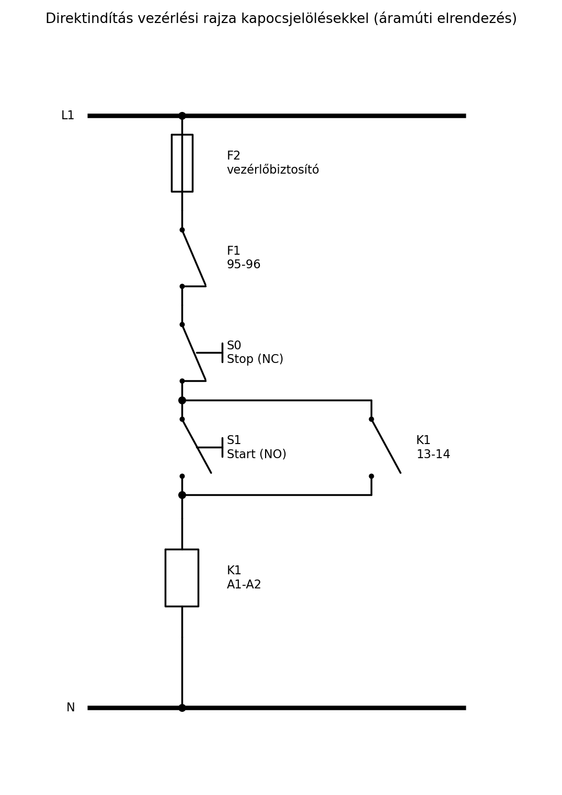

A kapcsolódó elmélet: tankönyv, 13.1 alfejezet.
Adott: Egy K1 mágneskapcsoló, rajzán a következő kapcsok szerepelnek: A1, A2, 1, 2, 3, 4, 5, 6, 13, 14, 21, 22. Kérdés: Milyen funkciót látnak el az egyes kapcsok?
Megoldás: - A1, A2 – tekercs (vezérlőfeszültség). - 1-2, 3-4, 5-6 – főérintkezők, a háromfázisú motor kapcsolására. - 13-14 – záródó (NO) segédérintkező, öntartásra. - 21-22 – bontó (NC) segédérintkező, például reteszelésre vagy jelzésre.
Ellenőrzés: A kapocsjelölés logikája alapján a párok száma és a kezdő számok (1, 3, 5; 13, 21) megerősítik a besorolást. A gyártói adatlap a kapocsjelölés pontos kiosztását tartalmazza.
Adott: Egy motor direktindítás vezérlési rajza: S1 start nyomógomb (NO), S0 stop nyomógomb (NC), F1 hőkioldó NC érintkezője (95-96), K1 mágneskapcsoló tekercse (A1-A2), K1 öntartó NO segédérintkezője (13-14). A vezérlőfeszültség 230 V AC. Kérdés: Hogyan kössük be a vezérlőáramkört a kapocsjelölésekkel?
Megoldás: - A vezérlőfeszültség L1 fázisa (az F2 vezérlőbiztosító után) sorosan megy: F1 hőkioldó 95-96 (NC) → S0 stop (NC) → S1 start (NO) → K1 tekercs A1 → A2 → N nulla. (A soros elemek sorrendje a működést nem változtatja meg; a védelmi érintkező szokás szerint a kör elején áll.) - Az S1 start nyomógombbal párhuzamosan kötjük a K1 öntartó 13-14 érintkezőjét. Így a start megnyomásakor a K1 behúz, a 13-14 zár, és a start felengedése után is tartja a vezérlést. - A motor főáramkörét a K1 főérintkezői (1-2, 3-4, 5-6) kapcsolják.
Ellenőrzés: A kapcsolás áramúti rajza alább látható; a bekötésnél minden kapocsjelölést ellenőrzünk. A hőkioldó 95-96 bontó érintkezője túlterheléskor megszakítja a tekercs áramkörét, tehát a motor leáll.

Nevezd meg a mágneskapcsoló alábbi kapocsjelöléseit: A1, A2, 1-2, 3-4, 5-6, 13-14, 21-22.
Magyarázd meg, mi a különbség a záró (NO) és a bontó (NC) érintkező rajzjele és kapocsjelölése között.
Egy mágneskapcsoló kapocsjelölése: A1-A2, 1-2, 3-4, 5-6, 13-14, 21-22. Rajzold le a kapcsolási rajzot egy direktindítású motorhoz, ahol a vezérlésben az F1 hőkioldó 95-96 (NC) érintkezője, az S1 start (NO), S0 stop (NC), a K1 tekercs és az öntartó 13-14 érintkező szerepel.
A termelésben a hőkioldó 97-98 érintkezőjét jelzőlámpa működtetésére használják. Magyarázd meg, miért záródó (NO) érintkezőre van szükség, és mi történik túlterheléskor.
Egy vezérlőszekrényben a hőkioldó túlterhelés miatt kiold (a jelzőablak vagy kar kioldott állást mutat), de a 97-98 jelzőérintkezője nem zár. A mérések szerint az érintkező nem zár. Milyen okot keresnél először? Hogyan ellenőriznéd a hiba helyét?
Tanműhelyi panelen feszültségmentesen azonosítsd a K1 mágneskapcsoló kapcsait. Kösd be a vezérlőkört a 2. példa áramúti rajza szerint (F2 → F1 95-96 → S0 → S1, vele párhuzamosan K1 13-14 → K1 A1, A2 → N), a 21-22 érintkezőt pedig egy jelzőáramkörhöz. Az öt biztonsági szabályt alkalmazd, és dokumentáld a bekötést.
A záró (NO) érintkező nyugalmi helyzetben nyitott, működtetésre zár; kapocsjelölése a funkciót mutató második számjeggyel …3-…4 (például 13-14). A bontó (NC) érintkező nyugalmi helyzetben zárt, működtetésre nyit; kapocsjelölése …1-…2 (például 21-22). A rajzjelekben a záró érintkező nem érintkezik, a bontó érintkezik nyugalmi helyzetben.
A vezérlési rajz: - Fázis (L1) → F1 hőkioldó 95-96 (NC) → S0 stop (NC) → S1 start (NO) → K1 tekercs (A1-A2) → nulla (N). - Az S1 start kapcsolóval párhuzamosan K1 öntartó 13-14. - A főáramkör: L1, L2, L3 → Q1 (zárlatvédelemre: F3 olvadóbiztosítók vagy zárlati kioldású motorvédő megszakító; ha a Q1 túlterhelés-védelmet is ad, az F1 hőkioldó elmaradhat, és a vezérlőkörbe a Q1 segédérintkezője kerül) → K1 főérintkezők (1-2, 3-4, 5-6) → F1 hőkioldó fűtőelemei (1-2, 3-4, 5-6) → motor U1, V1, W1; a motor háza PE-re kötve. - A vezérlőkör: L1 → F2 vezérlőbiztosító → F1 95-96 → S0 stop → S1 start ∥ K1 13-14 → K1 A1-A2 → N. A vezérlőkör rajza a 2. példa áramúti rajza.
A 97-98 záró (NO) érintkező túlterheléskor zár, így a jelzőlámpa világít. Ha bontó érintkező lenne, a lámpa nyugalmi állapotban világítana, és túlterheléskor kialudna – ez nem megfelelő a hiba jelzésére.
Először ellenőrizd, hogy a hőkioldó valóban kioldott állásban van-e (jelzőablak, kar), és nem csak a mágneskapcsoló engedett-e el más okból (S0, kézi lekapcsolás). Ha a készülék motorvédő kapcsoló, a zárlati (mágneses) kioldás egyes típusoknál más segédérintkezőt működtet – ezt a gyártói adatlap mutatja. Ezután az öt szabály szerint feszültségmentesített állapotban a hőkioldó TEST gombjával kioldva mérj folytonosságot a 97-98 között, majd RESET után ismét. Ha a próbakioldásnál nincs átmenet, az érintkező hibás, a készüléket cserélni kell; ha van, a jelzőkör vezetékét és a lámpát vizsgáld.
A megoldás a gyakorlati útmutató lépéseit követi: először az öt szabály szerinti feszültségmentesítés, a kapocsazonosítás a gyártói adatlap és a rajz alapján. Bekötési tábla: L1 (F2 után) → F1 95 | F1 96 → S0 11 | S0 12 → S1 13 és K1 13 | S1 14 és K1 14 → K1 A1 | K1 A2 → N; jelzőkör: L1 (F2 után) → K1 21 | K1 22 → H1 → N. A H1 akkor világít, ha a K1 nincs behúzva (motor áll); behúzáskor kialszik. Feszültségmentes folytonossági próba: a K1 kézi benyomásakor a 13-14 zár, a 21-22 bont.
Gyakorló: kapocsszámok olvasása. A kapocsszámok gyors olvasása vizsga- és munkahelyi alapkészség. A HTML-kiadás gyakorlója három feladattípust ad (Új feladat gombbal és feladatszámmal): A – mi ez a kapocspár, és mi a sorszáma; B – számozd meg a felpattintott segédérintkező-blokkot a beépített 13–14 után; C – melyik kapocspár-fajtát kötöd öntartásra, reteszelésre, üzem- és hibajelzésre, túlterhelés-leállításra. Az ellenőrzés a szabályt mondja ki, és a tipikus tévesztést (pl. bontó öntartásra, 95–96 hibajelzésre) külön megnevezi. A nyomtatott változatban egy mintafeladat és az alábbi rögzített sorozat szerepel, megoldókulccsal.
Rögzített feladatsor. A HTML-kiadás gyakorlója végtelen sok hasonló feladatot ad; az alábbi sor rögzített, a megoldókulcs a végén található.
Megoldókulcs.
| Feladat | Szint | Eredmény |
|---|---|---|
| 1. | A | a kapocspár = záró segédérintkező; sorszám (első számjegy) = 1 |
| 2. | A | a kapocspár = bontó segédérintkező; sorszám (első számjegy) = 3 |
| 3. | A | a kapocspár = záró segédérintkező; sorszám (első számjegy) = 4 |
| 4. | A | a kapocspár = hőkioldó bontó (95–96) |
| 5. | A | a kapocspár = hőkioldó záró (97–98) |
| 6. | A | a kapocspár = késleltetve záró; sorszám (első számjegy) = 6 |
| 7. | A | a kapocspár = késleltetve bontó; sorszám (első számjegy) = 5 |
| 8. | A | a kapocspár = tekercs |
| 9. | A | a kapocspár = főérintkező; hányadik pólus = 3 |
| 10. | A | a kapocspár = váltóérintkező; sorszám (első számjegy) = 1 |
| 11. | B | 1. blokk-érintkező (bontó) első kapcsa = 21; 2. blokk-érintkező (bontó) első kapcsa = 31; 3. blokk-érintkező (záró) első kapcsa = 43; 4. blokk-érintkező (záró) első kapcsa = 53 |
| 12. | C | a megfelelő kapocspár = záró segédérintkező (x3–x4) |
| 13. | C | a megfelelő kapocspár = bontó segédérintkező (x1–x2) |
Kidolgozott megoldások.